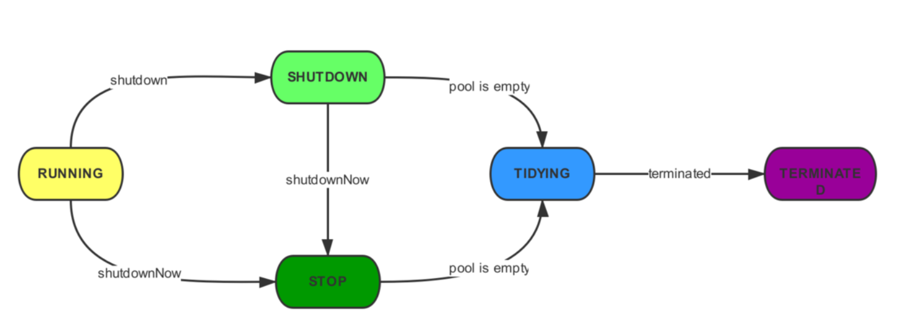
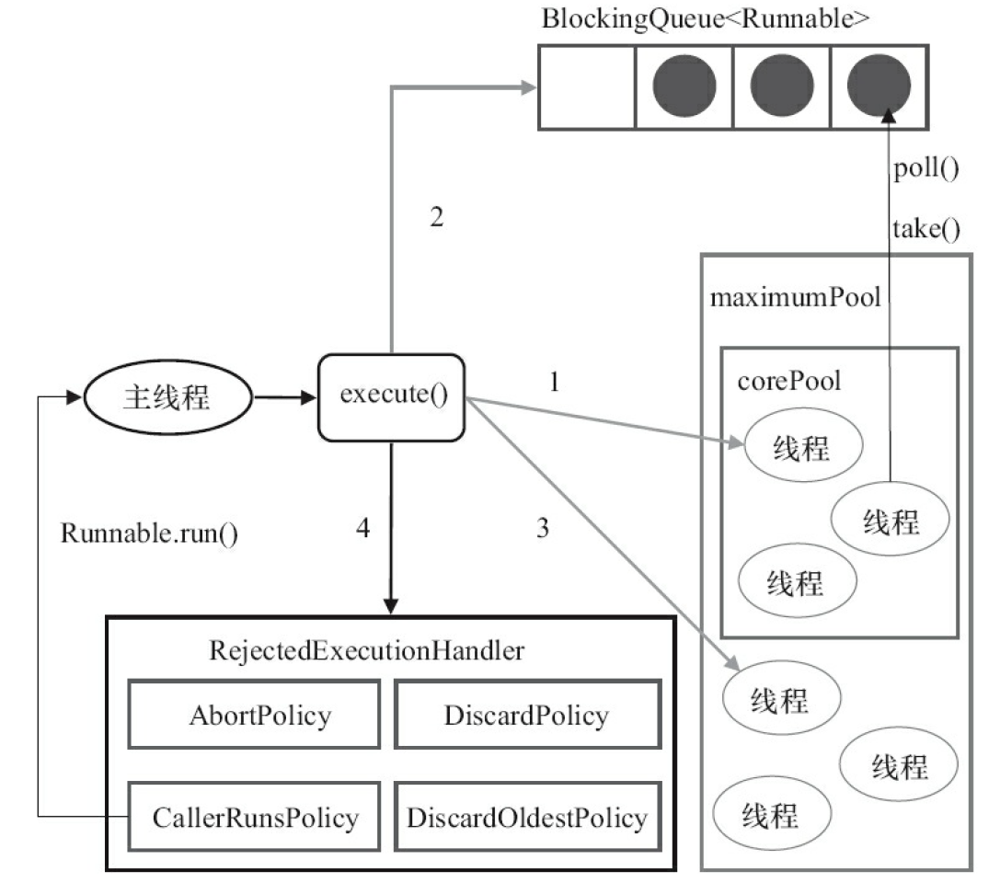

1.介绍 1.1 使用线程池的原因 使用线程池主要有以下原因：
1.2 ThreadPoolExecutor简介 1 2 3 4 5 6 7 8 9 10 11 12 13 14 15 16 17 18 19 20 21 22 23 24 public ThreadPoolExecutor (int corePoolSize, int maximumPoolSize, long keepAliveTime, TimeUnit unit, BlockingQueue<Runnable> workQueue, ThreadFactory threadFactory, RejectedExecutionHandler handler) if (corePoolSize < 0 || maximumPoolSize <= 0 || maximumPoolSize < corePoolSize || keepAliveTime < 0 ) throw new IllegalArgumentException(); if (workQueue == null || threadFactory == null || handler == null ) throw new NullPointerException(); this .acc = System.getSecurityManager() == null ? null : AccessController.getContext(); this .corePoolSize = corePoolSize; this .maximumPoolSize = maximumPoolSize; this .workQueue = workQueue; this .keepAliveTime = unit.toNanos(keepAliveTime); this .threadFactory = threadFactory; this .handler = handler; }
ThreadPoolExecutor 包含 7 个参数，其中 threadFactory、handler 为可选项，其他为必选项，各参数含义如下：
corePoolSize：核心线程最大值。线程池的线程分为核心线程和非核心线程，核心线程闲置也不会被销毁，非核心线程闲置一定时间后会被回收
maximumPoolSize：线程总数最大值，等于核心线程数+非核心线程数
keepAliveTime：非核心线程闲置超时时长，超过将被销毁
unit：keepAliveTime 的单位，是个枚举类型，包括天、小时、分、秒、毫秒、微秒、纳秒
workQueue：工作队列，维护等待执行的任务对象
常用的几个阻塞队列：
LinkedBlockingQueue：链表实现的阻塞队列，默认大小是 Integer.MAX_VALUE，也可用户指定大小
ArrayBlockingQueue：数组实现的阻塞队列，需要指定大小
SynchronousQueue：同步队列，内部容量为 0，put 操作必须等待一个 take 操作，反之亦然
DelayQueue：延时队列，当队列的元素到达延时时间，才能够被获取
threadFactory：线程工厂，用于批量创建线程，不指定则使用默认工厂
handler：拒绝处理策略，当任务无法入队且达到线程数量限制时采用处理策略，有 4 种实现：
AbortPolicy：默认使用，丢弃任务并抛出 RejectedExecutionException 异常
DiscardPolicy：忽略任务，不抛出异常
DiscardOldestPolicy：丢弃最旧的任务，尝试执行新任务，失败则重复该过程
CallerRunsPolicy：由调用线程（将该任务添加到线程池的线程）处理该任务
1.3 线程池状态 类似线程，线程池也有自己的状态，在代码中通过一些常量来表示。
1 2 3 4 5 6 private static final int RUNNING = -1 << COUNT_BITS;private static final int SHUTDOWN = 0 << COUNT_BITS;private static final int STOP = 1 << COUNT_BITS;private static final int TIDYING = 2 << COUNT_BITS;private static final int TERMINATED = 3 << COUNT_BITS;
RUNNING：接受新任务，也能处理阻塞队列中的任务
SHUTDOWN：不接受新任务，但能处理队列中的任务
STOP：不接受新任务，不处理队列中的任务，并且中断正在处理的任务
TIDYING：已经没有工作线程和任务，并且马上要调用 terminated 方法
TERMINATED：调用 terminated 方法结束，线程池停止

线程池内部用一个 int 类型变量 ctl 同时表示线程池状态和线程数量，高 3 位用于表示线程池状态，而低 29 位表示线程的数量。
此处使用一个变量的好处是如果对两个状态都进行同步修改，只需要通过位操作即可，免去了加锁操作，从这里也能感受到 Doug Lea 的精心设计。
1.4 线程池配置 给出如下定义：
CPU 的数量 = N
预期 CPU 使用率 = U
等待时间与计算时间的比率 = W/C
则推荐的线程池大小为：
CPU 密集型：N + 1
IO 密集型：N x U x (1 + W/C)
2. 线程池工作流程 2.1 execute execute 是线程池处理任务的核心方法，其 JDK 1.8 版本的源码如下：
1 2 3 4 5 6 7 8 9 10 11 12 13 14 15 16 17 18 19 20 21 22 23 24 public void execute (Runnable command) if (command == null ) throw new NullPointerException(); int c = ctl.get(); if (workerCountOf(c) < corePoolSize) { if (addWorker(command, true )) return ; c = ctl.get(); } if (isRunning(c) && workQueue.offer(command)) { int recheck = ctl.get(); if (! isRunning(recheck) && remove(command)) reject(command); else if (workerCountOf(recheck) == 0 ) addWorker(null , false ); } else if (!addWorker(command, false )) reject(command); }
其流程如下：

2.2 线程复用 上述 execute 方法是线程池处理任务、创建线程和执行拒绝策略的主流程。那么如何进行线程复用呢？这需要提及上面的 addWorker 方法，创建线程时，会将线程封装为 worker，将其添加到工作组，这个 worker 则会不断从阻塞队列拿任务执行。addWorker 的代码如下：
1 2 3 4 5 6 7 8 9 10 11 12 13 14 15 16 17 18 19 20 21 22 23 24 25 26 27 28 29 30 31 32 33 34 35 36 37 38 39 40 41 42 43 44 45 private boolean addWorker (Runnable firstTask, boolean core) boolean workerStarted = false ; boolean workerAdded = false ; Worker w = null ; try { w = new Worker(firstTask); final Thread t = w.thread; if (t != null ) { final ReentrantLock mainLock = this .mainLock; mainLock.lock(); try { int rs = runStateOf(ctl.get()); if (rs < SHUTDOWN || (rs == SHUTDOWN && firstTask == null )) { if (t.isAlive()) throw new IllegalThreadStateException(); workers.add(w); int s = workers.size(); if (s > largestPoolSize) largestPoolSize = s; workerAdded = true ; } } finally { mainLock.unlock(); } if (workerAdded) { t.start(); workerStarted = true ; } } } finally { if (! workerStarted) addWorkerFailed(w); } return workerStarted; }
addWorker 方法先对线程数量进行判断，如果达到上限则返回 false（execute 中即可执行拒绝策略），否则获得全局锁后创建线程封装为 worker，将其添加到工作组中，并启动线程。
接下来我们看看 Worker 的代码：
1 2 3 4 5 6 7 8 9 10 11 12 13 14 15 private final class Worker extends AbstractQueuedSynchronizer implements Runnable final Thread thread; Runnable firstTask; Worker(Runnable firstTask) { setState(-1 ); this .firstTask = firstTask; this .thread = getThreadFactory().newThread(this ); } public void run () runWorker(this ); } }
Worker 的构造函数创建了一个线程，并且任务就是自身，当 addWorker 方法中调用 t.start 方法时，将会调用 Worker 的 run 方法，其代码如下：
1 2 3 4 5 6 7 8 9 10 11 12 13 14 15 16 17 18 19 20 21 22 23 24 25 26 27 28 29 30 31 32 33 34 35 36 37 38 39 40 41 42 43 44 45 46 47 48 49 50 51 public void run () runWorker(this ); } final void runWorker (Worker w) Thread wt = Thread.currentThread(); Runnable task = w.firstTask; w.firstTask = null ; w.unlock(); boolean completedAbruptly = true ; try { while (task != null || (task = getTask()) != null ) { w.lock(); if ((runStateAtLeast(ctl.get(), STOP) || (Thread.interrupted() && runStateAtLeast(ctl.get(), STOP))) && !wt.isInterrupted()) wt.interrupt(); try { beforeExecute(wt, task); Throwable thrown = null ; try { task.run(); } catch (RuntimeException x) { thrown = x; throw x; } catch (Error x) { thrown = x; throw x; } catch (Throwable x) { thrown = x; throw new Error(x); } finally { afterExecute(task, thrown); } } finally { task = null ; w.completedTasks++; w.unlock(); } } completedAbruptly = false ; } finally { processWorkerExit(w, completedAbruptly); } }
runWorker 方法会进入一个死循环，优先执行 firstTask，然后再通过 getTask 方法从阻塞队列中获取任务执行。除此之外线程池还提供了 beforeExecute 和 afterExecute 两个 hook 方法交由用户自定义实现任务执行前和执行后的操作。
到此我们知道了，只要 getTask 方法不返回 null，那么这个线程就不会被回收，那么 getTask 方法是如何实现闲置一定时间后返回 null 呢，其代码如下：
1 2 3 4 5 6 7 8 9 10 11 12 13 14 15 16 17 18 19 20 21 22 23 24 25 26 27 28 29 30 31 32 private Runnable getTask () boolean timedOut = false ; for (;;) { int c = ctl.get(); int rs = runStateOf(c); int wc = workerCountOf(c); boolean timed = allowCoreThreadTimeOut || wc > corePoolSize; if ((wc > maximumPoolSize || (timed && timedOut)) && (wc > 1 || workQueue.isEmpty())) { if (compareAndDecrementWorkerCount(c)) return null ; continue ; } try { Runnable r = timed ? workQueue.poll(keepAliveTime, TimeUnit.NANOSECONDS) : workQueue.take(); if (r != null ) return r; timedOut = true ; } catch (InterruptedException retry) { timedOut = false ; } } }
核心线程调用的 workQueue.take 方法，如果队列为空将阻塞在当前调用，直到有新任务入队；而非核心线程调用 workQueue.poll(keepAliveTime, TimeUnit.NANOSECONDS) 方法，一段时间未获取任务将会返回 null，在下一轮循环则会退出循环返回 null 给 runWorker 方法，runWorker 方法退出循环回收线程，至此线程池的运行逻辑便梳理清楚了。
3. 常见线程池 Executors 类提供了几个静态方法创建特定类型的线程池。
3.1 newCachedThreadPool 1 2 3 4 5 public static ExecutorService newCachedThreadPool() { return new ThreadPoolExecutor(0, Integer.MAX_VALUE, 60L, TimeUnit.SECONDS, new SynchronousQueue<Runnable>()); }
CachedThreadPool 不会创建核心线程，并且采用 SynchronousQueue 存储，提交任务后如果有空闲线程则进行处理，没有则创建一个非核心线程，空闲线程在 60s 后将被回收。
根据 CachedThreadPool 的上述特点，它适合使用在 大量短时间任务 的场景。
3.2 FixedThreadPool 1 2 3 4 5 public static ExecutorService newFixedThreadPool (int nThreads) return new ThreadPoolExecutor(nThreads, nThreads, 0L , TimeUnit.MILLISECONDS, new LinkedBlockingQueue<Runnable>()); }
FixedThreadPool 只能创建核心线程，提交任务后核心线程空闲进行处理，不空闲则入列等待，等待的任务数量上限是 Integer.MAX_VALUE。
特点：
只会创建核心线程
线程不会被回收，一直阻塞
几乎不会触发拒绝策略
3.3 SingleThreadExecutor 1 2 3 4 5 6 public static ExecutorService newSingleThreadExecutor () return new FinalizableDelegatedExecutorService (new ThreadPoolExecutor(1 , 1 , 0L , TimeUnit.MILLISECONDS, new LinkedBlockingQueue<Runnable>())); }
SingleThreadPool 有且仅有一个核心线程工作，不会创建非核心线程，所有任务按 先来先服务的顺序执行。
3.4 ScheduledThreadPool ScheduledThreadPool 会创建一个定长线程池，支持定时和周期性任务。
1 2 3 4 5 6 7 8 public static ScheduledExecutorService newScheduledThreadPool (int corePoolSize) return new ScheduledThreadPoolExecutor(corePoolSize); } public ScheduledThreadPoolExecutor (int corePoolSize) super (corePoolSize, Integer.MAX_VALUE, 0 , NANOSECONDS, new DelayedWorkQueue()); }
《阿里巴巴开发手册》中不推荐通过这些方法创建线程池，推荐通过调用 ThreadPoolExecutor 构造函数的方式创建，这样处理让创建线程池的同学需要明确业务场景，选择合适的参数。
参考资料